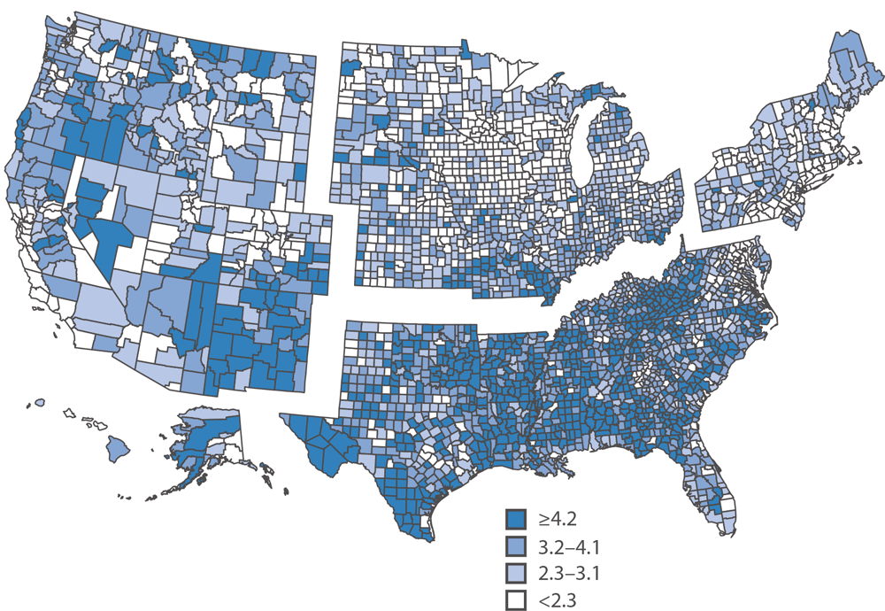
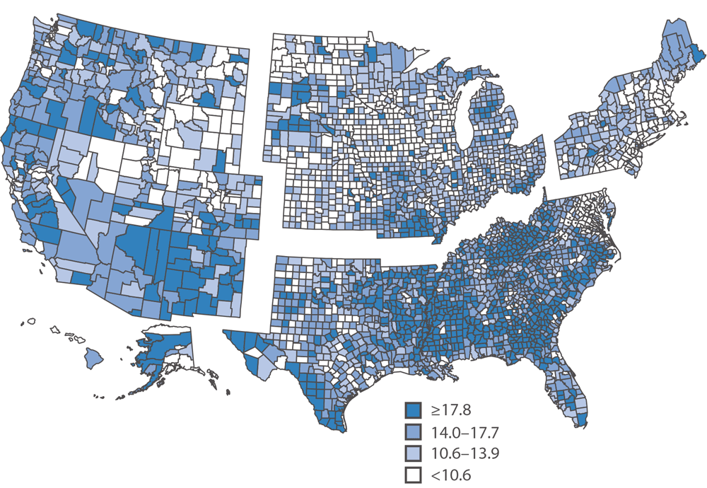
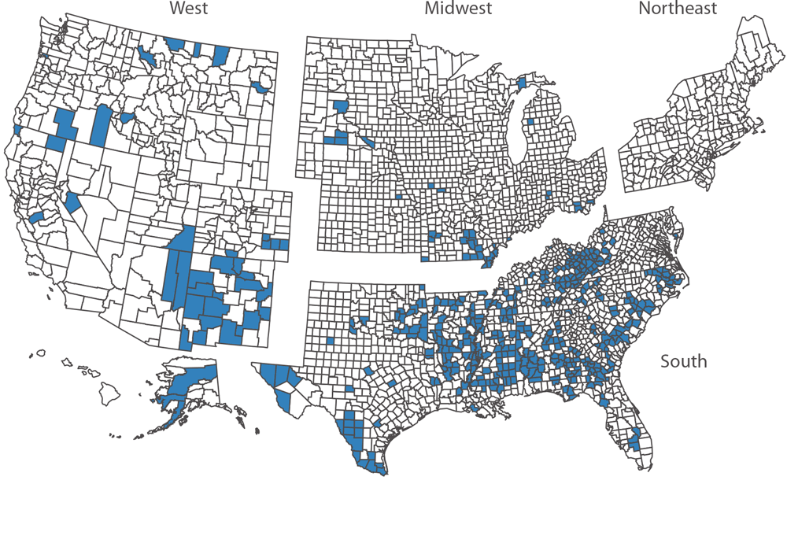

Severe Vision Loss And Poverty
Share of adults with severe vision loss

Share of adults with family income below the poverty level

Counties in the top quartile for both severe vision loss and poverty
